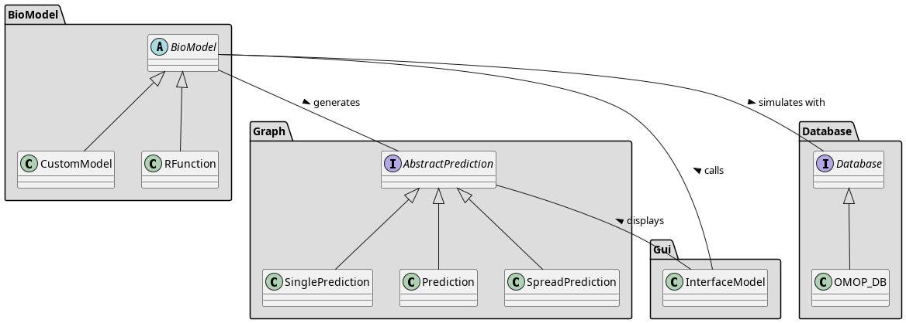

LifeTwin Core Internals
General Architecture Diagram
Core Modules
A file containing classes for defining bio models, including parameters, predictions, and model descriptions.
- class biomodel.biomodel.AgeInt(id: int | str = 'age', minimum: int = 0, maximum: int = 120, name: str | None = 'Age')
Bases:
IntA data class representing an age integer parameter, inheriting from the Int class. It includes attributes for minimum and maximum values, and the class is frozen and supports equality comparison.
- id: int | str = 'age'
- maximum: int = 120
- minimum: int = 0
- name: str | None = 'Age'
- class biomodel.biomodel.BioModel
Bases:
ABCA base abstract class for defining bio models with various methods for handling predictions and model descriptions.
- abstract age_parameter() bool
This method should be implemented to determine if the model requires an age parameter.
- describe()
This method prints the description of the object using the _describe method.
- get_intervals()
Returns the intervals of the object if it exists, otherwise raises a TypeError. It also checks if the intervals attribute is a list and if each element in the list is a RiskInterval object.
- get_title()
Returns the title of the object if it exists, otherwise raises a TypeError.
- has_intervals()
Returns a boolean indicating whether the object has an intervals attribute.
- has_title()
Returns a boolean indicating whether the object has a title attribute.
- abstract kwarg_to_omop()
This method should be implemented to convert keyword arguments to OMOP format.
- property name
This property returns the name of the class.
- output_meaning()
This method returns the interpretation of the model’s output, which should be one of the valid interpretations: “risk”, “percentage”, “probability”, or “value”. If the model is continuous, it should have an interpretation attribute, and if it is categorical, the interpretation attribute should be removed.
- abstract predict()
This method should be implemented to make predictions using the model.
- predict_person(current, variations=None) SinglePrediction | Prediction
This method predicts the outcome for a person based on the model’s characteristics. It determines whether the prediction should be made over time and if variations in the input data are present, and then calls the appropriate prediction method based on these conditions. If the model is not age-dependent but contains a distribution, it raises an Exception.
- predict_person_once(current, variations=None) SinglePrediction
This method predicts the outcome for a person based on the model’s characteristics, considering any variations in the input data. It iterates through the variations to make predictions and returns a SinglePrediction object containing the predicted outcomes for each variation.
- predict_person_time(current, variations=None, years=10) Prediction
This method predicts the outcome for a person over a specified time period, taking into account variations in the input data. It checks for the presence of an age parameter and the required input data, and then iterates through the specified years to make predictions. The method returns a Prediction object containing the predicted outcomes for each variation over the specified time period.
- predict_person_time_variations(current, variations=None, years=10, simulation_twins=100) SpreadPrediction
This method predicts the outcome for a person over a specified time period, considering variations in the input data and simulating multiple scenarios. It iterates through the variations and simulations to make predictions and returns a SpreadPrediction object containing the predicted outcomes for each variation and simulation.
- predict_population_time(database: Database, variations=None, years=10, person_filter=None) Prediction
This method predicts the outcome for a population over a specified time period, considering variations in the input data and filtering the population based on a provided filter. It iterates through the population and variations to make predictions and returns a SpreadPrediction object containing the predicted outcomes for each variation and person in the population.
- abstract return_category() ReturnCategory
This method should be implemented to return the category of the model’s output.
- should_have_meaning()
Returns a boolean indicating whether the model should have an interpretation attribute.
- class biomodel.biomodel.Bool(id: bool | str, name: str | None = None)
Bases:
ParameterA data class representing a boolean parameter, inheriting from the Parameter class. It includes a method to get the default value and the type name. The class is frozen and supports equality comparison.
- get_default_value()
Returns the default value for the object, which is False.
- id: bool | str
- name: str | None = None
- type_name()
Returns the type name of the object, which is “Boolean”.
- class biomodel.biomodel.BoolInt(id: int | str, true: int, false: int, name: str | None = None)
Bases:
ParameterA data class representing a boolean integer parameter, inheriting from the Parameter class. It includes attributes for true and false values, and methods to get the default value and the type name. The class is frozen and supports equality comparison.
- false: int
- get_default_value()
Returns the default value for the object, which is the false value.
- id: int | str
- name: str | None = None
- true: int
- type_name()
Returns the type name of the object, which is “Boolean”.
- class biomodel.biomodel.CustomModel
Bases:
BioModelA custom model class inheriting from BioModel, with abstract methods for prediction and methods for parsing fields to determine parameters and return category.
- age_parameter()
This method returns the age parameter from the model’s parameters, if it exists.
- kwarg_to_omop()
This method returns the parameters in OMOP format for the model.
- abstract predict(row)
This method should be implemented to make predictions using the model based on the input row.
- return_category()
This method returns the category of the model’s output based on the return annotation. If the return annotation is a string, it returns “CATEGORICAL”. If it is an integer or float, it returns “CONTINUOUS”. If the return annotation is None, it also returns “CONTINUOUS”. If the return annotation is of an unknown type, it raises an Exception.
- class biomodel.biomodel.Enum(id: str | int, values: List[str | int] | Dict[str | int, str], name: str | None = None)
Bases:
ParameterA data class representing an enum parameter, inheriting from the Parameter class. It includes attributes for values and methods to get the default value, type name, and domain information. The class is frozen and supports equality comparison.
- domain_info()
Returns information about the domain, including the possible values for the object.
- get_default_value()
Returns the default value for the object based on the values provided. If the values are in a dictionary, it returns the first key. Otherwise, it returns the first value.
- id: str | int
- name: str | None = None
- type_name()
Returns the type name of the object, which is “Enum”.
- values: List[str | int] | Dict[str | int, str]
- class biomodel.biomodel.Float(id: float | str, minimum: float = None, maximum: float = None, name: str | None = None)
Bases:
ParameterA data class representing a float parameter, inheriting from the Parameter class. It includes attributes for minimum and maximum values, and methods to get the default value, type name, and domain information. The class is frozen and supports equality comparison.
- domain_info()
Returns information about the domain, including the minimum and maximum values if they are defined.
- get_default_value()
Returns the default value for the object, which is the minimum value.
- id: float | str
- maximum: float = None
- minimum: float = None
- name: str | None = None
- type_name()
Returns the type name of the object, which is “Float”.
- class biomodel.biomodel.Int(id: int | str, minimum: int = None, maximum: int = None, name: str | None = None)
Bases:
ParameterA data class representing an integer parameter, inheriting from the Parameter class. It includes attributes for minimum and maximum values, and methods to get the default value, type name, and domain information. The class is frozen and supports equality comparison.
- domain_info()
Returns information about the domain, including the minimum and maximum values if they are defined.
- get_default_value()
Returns the default value for the object, which is the minimum value.
- id: int | str
- maximum: int = None
- minimum: int = None
- name: str | None = None
- type_name()
Returns the type name of the object, which is “Integer”.
- class biomodel.biomodel.OMOPId(id: int | str)
Bases:
objectA data class representing an OMOP ID with a union of integer and string types. The class is frozen and supports equality comparison.
- id: int | str
- class biomodel.biomodel.Parameter
Bases:
ABCAn abstract base class for defining parameters with an id and an optional name. It includes abstract methods to get the default value and the type name, as well as a method to provide domain information.
- domain_info()
This method returns information about the domain.
- abstract get_default_value()
This method should be implemented to return the default value for the object.
- id: str | int
- name: str | None = None
- abstract type_name()
This method should be implemented to return the type name of the object.
- class biomodel.biomodel.RFunction
Bases:
BioModelA class representing an R function as a bio model, with methods for parsing fields, resolving file paths, and handling predictions.
- age_parameter()
This method returns the age parameter from the RFunction’s parameters, if it exists. If the age parameter is not found, it returns None.
- property class_name
This property returns the class name of the RFunction object.
- kwarg_to_omop()
This method returns a copy of the parameters for the RFunction in OMOP format.
- predict(*args, **kwargs)
This method makes predictions using the RFunction by calling the underlying R function with the provided keyword arguments. It raises an Exception if positional arguments are provided or if a keyword argument is not found in the RFunction’s parameters.
- property resolved_path
This property returns the resolved path of the R file by obtaining the absolute path of the module and then resolving the file path relative to the module’s location.
- return_category()
This method returns the category of the RFunction’s output based on the return type attribute. If the return type is “continuous”, it returns “CONTINUOUS”. If it is “categorical”, it returns “CATEGORICAL”. If the return type is unknown, it raises an Exception. If the return type attribute is not present, it defaults to “CONTINUOUS”.
- class biomodel.biomodel.ReturnCategory(value, names=None, *values, module=None, qualname=None, type=None, start=1, boundary=None)
Bases:
EnumA Python enumeration class representing return categories with continuous and categorical options.
- CATEGORICAL = 2
- CONTINUOUS = 1
- class biomodel.biomodel.RiskInterval(value: float, name: str)
Bases:
objectA data class representing a risk interval with a value and a name. The class is frozen and supports equality comparison.
- name: str
- value: float
- biomodel.biomodel.contains_distribution_in_variations(variations)
- biomodel.biomodel.filter_transformations(variation, year, new_params, model_name)